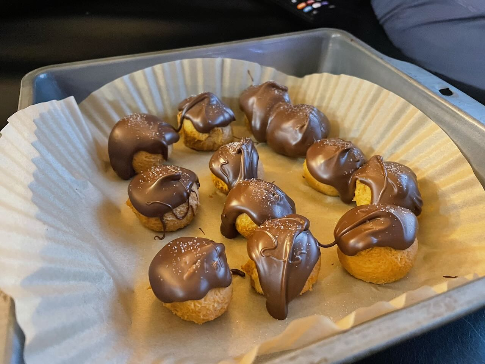

No-Bake Peanut Chocolate Salty Balls
No Bake · Sugar Free · Makes 12 balls

Ingredients
| Item | Amount | Calories | Protein | Net Carbs | Fat |
|---|---|---|---|---|---|
| Peanut butter powder (PB Fit) | 1 cup (92g) | 340 | 34g | 20g | 10g |
| No-sugar-added applesauce | 1/2 cup | 50 | 0g | 13g | 0g |
| SF chocolate chips (Bake Believe) | 1/2 cup (85g) | 140 | 2g | 6g | 12g |
| Allulose powder | 1 tbsp (~12g) | 5 | 0g | 0g | 0g |
| Flaky sea salt | pinch per ball | 0 | 0g | 0g | 0g |
Instructions
- Mix the dough — Combine PB powder, applesauce, and allulose in a bowl and stir until a thick, scoopable dough forms.
- Roll the balls — Divide into 12 equal portions and roll each into a smooth ball. Place on a parchment-lined plate.
- Freeze to firm — Freeze balls for 15 minutes so they hold up during dipping.
- Melt chocolate — Set a heatproof bowl over a saucepan with 2 inches of barely simmering water (don't let the bowl touch water). Add chips and stir continuously until melted and smooth. Remove from heat.
- Dip and coat — Roll each ball in melted chocolate using a fork or toothpick, letting excess drip off. Place back on parchment.
- Salt and set — Sprinkle flaky sea salt on each ball immediately, then refrigerate 20–30 minutes until chocolate is firm.
Nutrition (per ball)
~45
Calories
~3g
Protein
~3.3g
Net Carbs
~1.8g
Fat
Note: Bake Believe chips scorch fast in the microwave — use a double boiler only. Stir constantly and pull off heat as soon as smooth. Residual heat finishes the job.